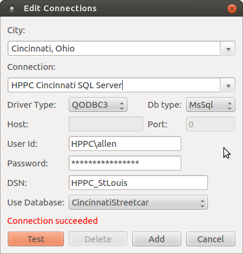
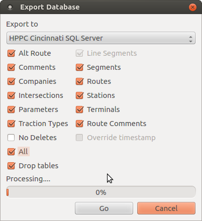

Using MySql or SQL Server databases
Prerequisites
MySql
Generally, to access a MySql database requires that MySql driver
plugins are configured and compiled for your version of Qt and
operating system. This is explained here. MySql databases can also be accessed via ODBC.
SQL Server
Accessing SQL Server databases requires ODBC. ODBC is supported
in Windows automatically but must be added for Unix systems.
ODBC
On windows, ODBC datasources must be defined with the ODBC
configuration utility that is part of Windows. On Unix, it will be
necessary to download and install the FreeTds utilities.
Creaing a MySql or SQL Server database.
Assuming that you have successfully created and tested the MySql
drivers or ODBC datasources, you must then create create a connection
to the server and a database on the target server.

If a test is successful then click on the "Add" button to add the connection to the city.
Mapper does not directly support actually creating the database on the
server. However, the SqlQuery dialog accessible from the Tools menu
could possibly be utilized. However, it is suggested that the database
be created with the utility associated with the database server, e.g,
PHPMyAdmin or MySql Workbench in the case of MySql or SQL Server
Management Studio in the case of SQL Server. These utilities will also
enable you to setup any necessary security necessary.
Once the Database has been created on the Server and assuming that you
have already created an populated your local Sqlite database, then
select Export Database from the Tools menu. This will display a dialog:

Make sure that the target database is selected in the "Export to"
combobox. Then click on the "All" checkbox which will select all
the applicable tables since we want to export all the tables. The "Drop
tables" checkbox is checked because we want to do the export by first
dropping the old table on the target and then creating the table and
insert all the rows. Click on "Go" to start the export process. If
"Drop tables" is not checked, the export process will compare the
target's data to determine what to export. This option is very slow and
is not recommended.